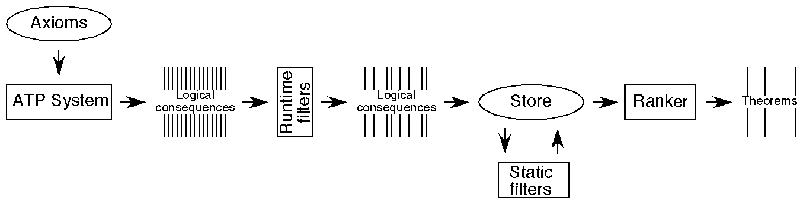

Automatic Theorem Discovery

Principle
- ATPs generate theorems
- Filters extract interesting ones
Interestingness
- Non-obvious (proof and possible proof)
- Novel (non-tautologous, non-redundant WRT axioms and other theorems)
- Surprising (relations between concepts)
- Intense (axioms compressed to theorem)
- Useful (non-specific, antecedent true in models of axioms)
- Comprehensible (limited number of concepts)
- Applicable (applies to many objects in the domain)
Issues
- Implementation
- Massive data sets
- Imprecise understanding of interestingness